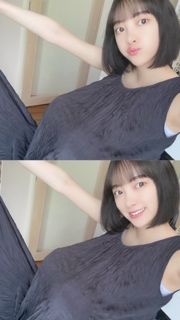
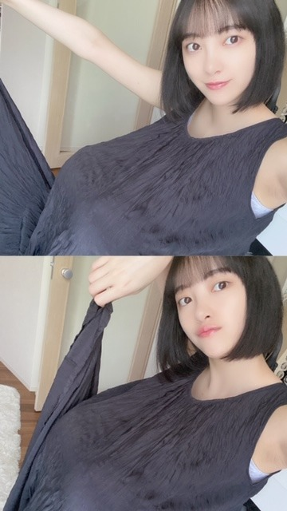
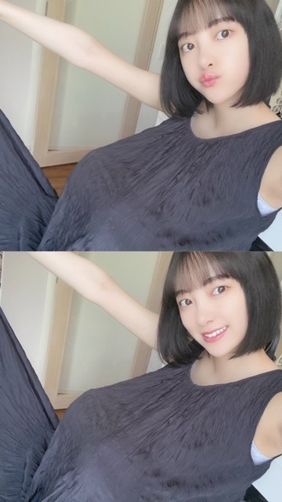
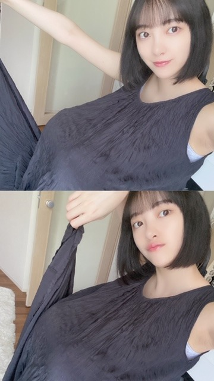

2020/0702Thuあるきだしてみる
観たい映画がたくさんあります
マイリスト溢れかえっています
今朝はいい天気だったので
海街diaryを観ました
家族愛と四季を感じられる
作品でお気に入りです
今は家族でUSを観ています
ゲットアウトの監督さんで
USの方を先に映画館で観ていたのですが
どちらもめちゃくちゃおもしろくて。
人間が "怖い" と感じるポイントをつくのが
うまいんですよね
光と影です、まさに
この間は、鍵泥棒のメソッドを観ました☺︎
コメディ要素満載だけど内容がしっかりと
あって終始面白かったなあ
堺雅人さん、香川照之さんのお芝居が
本当に最高でした！
コメディってお芝居が上手い方がやるから
面白さとリアリティさで無敵になるんだなぁと
勉強になりました☺︎
もう1回観たいです
今週中に観る予定のは
クローズ
空の青さを知る人よ
ライトオフ
あたりです
観れたらいいな！

ワンピースの中で体育座りをしてます。笑
UNIQLOのワンピースお気に入り
らくちん☺︎

tシャツとかワンピース着ると
体育座りしたくなるのわかりますか...？
tシャツだと伸びちゃうので
よくお母さんに怒られてました。笑
最近は空の写真をたくさん撮っています
いつかまた、載せますね☺︎
では
観たい映画がたくさんあります
マイリスト溢れかえっています
今朝はいい天気だったので
海街diaryを観ました
家族愛と四季を感じられる
作品でお気に入りです
今は家族でUSを観ています
ゲットアウトの監督さんで
USの方を先に映画館で観ていたのですが
どちらもめちゃくちゃおもしろくて。
人間が "怖い" と感じるポイントをつくのが
うまいんですよね
光と影です、まさに
この間は、鍵泥棒のメソッドを観ました☺︎
コメディ要素満載だけど内容がしっかりと
あって終始面白かったなあ
堺雅人さん、香川照之さんのお芝居が
本当に最高でした！
コメディってお芝居が上手い方がやるから
面白さとリアリティさで無敵になるんだなぁと
勉強になりました☺︎
もう1回観たいです
今週中に観る予定のは
クローズ
空の青さを知る人よ
ライトオフ
あたりです
観れたらいいな！

ワンピースの中で体育座りをしてます。笑
UNIQLOのワンピースお気に入り
らくちん☺︎

tシャツとかワンピース着ると
体育座りしたくなるのわかりますか...？
tシャツだと伸びちゃうので
よくお母さんに怒られてました。笑
最近は空の写真をたくさん撮っています
いつかまた、載せますね☺︎
では
2020/07/02 21:00
コメント(258)
未央奈ちゃん更新ありがとう！
いかがお過ごしでしょうか？
私はというと空き時間はスマホゲームばかりしております。
オススメ作品、今度見てみるね！
夏が来ましたね！
体調には気をつけてね！
ではでは～
いかがお過ごしでしょうか？
私はというと空き時間はスマホゲームばかりしております。
オススメ作品、今度見てみるね！
夏が来ましたね！
体調には気をつけてね！
ではでは～
黒髪姿可愛い(*⁰▿⁰*)
かわいいー
ブログ更新ありがとうございます
堀さんはブログ更新頻度がとても高く、こういった状況であっても、身近に感じることができるアイドルだと思います。ファンが何を言っているんだという話ではありますが...
高いプロ意識に感服すると同時に尊敬します。これからも応援させてください。
堀さんはブログ更新頻度がとても高く、こういった状況であっても、身近に感じることができるアイドルだと思います。ファンが何を言っているんだという話ではありますが...
高いプロ意識に感服すると同時に尊敬します。これからも応援させてください。
アスめちゃくちゃ怖くない？！映画館で見たとき泣きそうになった笑笑 最後の結末衝撃だったよね！！あれは海外の作品だからまだ非日常感があっていいけど、日本の遊園地だったら完全にトラウマになりそう、、755の天気の子のみおちゃんの生歌何回も聴いています！！優しい声で、話しかけるみたいに歌ってくれるから、癒されるんだよね〜君の名はの夢灯籠も歌って欲しい！！
ももんが
ももんが
みおなちゃん更新ありがとう╰(*´︶`*)╯♡
観たい映画がたくさんあるって良いね(*´꒳`*)
写真もありがとう✌︎('ω'✌︎ )
体育座り分かるわ〜笑
ワンピース似合ってて可愛い
46時間TVのタオル買ったよー
届いたら2018と共に飾ります（╹◡╹）♡
観たい映画がたくさんあるって良いね(*´꒳`*)
写真もありがとう✌︎('ω'✌︎ )
体育座り分かるわ〜笑
ワンピース似合ってて可愛い
46時間TVのタオル買ったよー
届いたら2018と共に飾ります（╹◡╹）♡
堀ちゃんブログ見返しました。
カチューシャ姿やってたね。
僕たちは勉強ができないの古橋文乃役実写版がでたら堀ちゃんにやってほしいな。
空たまに見てます。
ちょっとでも太陽にあたるために。
自分らしく生きるって大事だと思います!
堀ちゃんがでるドラマや映画をまた見れる日が来ることを願ってます!
ではまたコメントおじゃまします♪
カチューシャ姿やってたね。
僕たちは勉強ができないの古橋文乃役実写版がでたら堀ちゃんにやってほしいな。
空たまに見てます。
ちょっとでも太陽にあたるために。
自分らしく生きるって大事だと思います!
堀ちゃんがでるドラマや映画をまた見れる日が来ることを願ってます!
ではまたコメントおじゃまします♪
ブログ更新ありがとう！
ホラーやコメディなどジャンルが幅広くていいですね。
写真可愛くて癒されます。
いつもありがとうございます！
ホラーやコメディなどジャンルが幅広くていいですね。
写真可愛くて癒されます。
いつもありがとうございます！
ブログ更新ありがとう！
観たい映画がたくさんあるっていいな～
今は観る時間がないけどいつか未央奈のオススメ観ます！
ワンピース似合ってる☺️
いつもありがとう！
観たい映画がたくさんあるっていいな～
今は観る時間がないけどいつか未央奈のオススメ観ます！
ワンピース似合ってる☺️
いつもありがとう！
未央奈、こんにちは～
鍵泥棒のメソッド面白いですよね！
ワタシも大好きです。
ぜひ、同じ内田監督のアフタースクールも見てみてください、オススメです！
内田監督って、何度目の青空かのMV撮られてるんですね！
鍵泥棒のメソッド面白いですよね！
ワタシも大好きです。
ぜひ、同じ内田監督のアフタースクールも見てみてください、オススメです！
内田監督って、何度目の青空かのMV撮られてるんですね！
こんにちは今日一日お疲れさま(^^)/明日も頑張ってね
こんにちは☺️
海街diaryーー映画公開当時観ました
鎌倉が舞台
鎌倉や尾道とか絵になるなぁ
この夏は映画館にも行きたいな
体育座りかぁ
おうち時間でお腹がでたのかと思った(o’∀`)♪
では
未央奈ちゃん、ブログ更新ありがとう！
UNIQLOの服って感じがしない！スゴい！体育座りしたいとは思わないなー。
空の写真、楽しみにしてるね。
体調には気をつけてね。
UNIQLOの服って感じがしない！スゴい！体育座りしたいとは思わないなー。
空の写真、楽しみにしてるね。
体調には気をつけてね。
ロング未央奈もボブ未央奈も尊い
鍵泥棒のメソッドは本当に名作！
個人的にはキサラギっていう映画も見てほしい！
鍵泥棒のメソッドは本当に名作！
個人的にはキサラギっていう映画も見てほしい！
ブログ更新ありがとう！
みおなかわいい
みおなかわいい
みおなさん、韓国ドラマの「キングダム」も観てください！！
その天気、空をリンクしたかのような、表情から表現している姿めちゃめちゃ美しいですね。
それだけ表現力もあるんですから、いつもその空みたいにナチュラルなかんじでいけると最高だと思いますよ。
それだけ表現力もあるんですから、いつもその空みたいにナチュラルなかんじでいけると最高だと思いますよ。
未央奈ブログ更新ありがとう〜！可愛い好きだよ。
僕も観たいドラマや映画たくさんありますよ!笑
nnkgzzwkがあなたの投稿に「いいね 」しました。
」しました。
未央奈ちゃん。ブロブ更新ありがとう。空の写真 私も大好きです。幻想的な写真載せて下さい。
堀ちゃん！更新ありがとう！！
さすがの映画評論家！！笑
どちらも見たことがないんですけど
見たい！って思わせてくれる評論！
さすがですな〜！
ワンピースの中で体育座り笑
やっぱり堀ちゃんおちゃめだね！
かわいいです笑
ボブ未央奈めっちゃ好きだし
めっっちゃかわいいです！！笑
次回の更新も楽しみにしてますよ！
では！おやすみおな〜！
さすがの映画評論家！！笑
どちらも見たことがないんですけど
見たい！って思わせてくれる評論！
さすがですな〜！
ワンピースの中で体育座り笑
やっぱり堀ちゃんおちゃめだね！
かわいいです笑
ボブ未央奈めっちゃ好きだし
めっっちゃかわいいです！！笑
次回の更新も楽しみにしてますよ！
では！おやすみおな〜！
今回もめっちゃ可愛い！
更新待ってました〜
私もワンピース着たらよく、体育座りするw
ちっちゃい頃にTシャツでやって怒られたなw
海街diaryは本当にいい作品だよね〜
次の更新も待ってます
私もワンピース着たらよく、体育座りするw
ちっちゃい頃にTシャツでやって怒られたなw
海街diaryは本当にいい作品だよね〜
次の更新も待ってます
未央奈ちゃんは暑いのは苦手でしょ？
これからが恐ろしい
これからが恐ろしい
更新ありがとう(^^)
写真また楽しみにしてます(^^)
写真また楽しみにしてます(^^)
未央奈ちゃん、ブログ更新ありがとう
映画も色々あって面白いよね〜。最近見れてないから、時間ある時見て見ようかな…。
ワンピースにTシャツ何でも似合ってて可愛い✨
映画も色々あって面白いよね〜。最近見れてないから、時間ある時見て見ようかな…。
ワンピースにTシャツ何でも似合ってて可愛い✨
ワンピースの中で体育座りでしたか！
何か入ってるなぁ、と思いましたけど。
今、ユニクロのステテコ履いてますが、楽ですね♪
女性用にはリラコがあるので、未央奈ちゃんもいかがですか？☆
何か入ってるなぁ、と思いましたけど。
今、ユニクロのステテコ履いてますが、楽ですね♪
女性用にはリラコがあるので、未央奈ちゃんもいかがですか？☆
鍵泥棒のメソッド、面白いですよね。
佐々木蔵之介さん、大泉洋さん出演のアフタースクールおすすめです。
見たことなければ、是非！
佐々木蔵之介さん、大泉洋さん出演のアフタースクールおすすめです。
見たことなければ、是非！
未央奈ブログ更新ありがとう！
コメント遅れてゴメン
写真多くて嬉しい！
いつもインスタの更新もありがとう〜！
これからも応援してるよ！
体調には気をつけてね！
by未央奈推しのブラックコーヒー
コメント遅れてゴメン
写真多くて嬉しい！
いつもインスタの更新もありがとう〜！
これからも応援してるよ！
体調には気をつけてね！
by未央奈推しのブラックコーヒー
いつかはできる できるのなら そのうちに 今日できるよ～♪
ハリー・ポッターとかも面白いですよ(^o^)/
未央奈ちゃんおつかれさまです。ラフな格好でも可愛です。
だいすきやぉ
だいすきやぉ
未央奈～、こんばんわ 今日は兵庫県は凄い雨やでぇ～
今日は兵庫県は凄い雨やでぇ～ 朝からずっと降り続いてるわぁ
朝からずっと降り続いてるわぁ
未央奈は今日はどんな一日やったんかなぁ 楽しく過ごせた？
楽しく過ごせた？
映画観てたのかなぁ～
明日やっと！やっと楽天特典の写真集のメイキングが観れる～ ずっと仕事が立て込んでて、しっかり観れる時間できるまで我慢しててん
ずっと仕事が立て込んでて、しっかり観れる時間できるまで我慢しててん めっちゃ楽しみやぁ～
めっちゃ楽しみやぁ～ 感想明日伝えるねぇ
感想明日伝えるねぇ
「いつかの待ち合わせ場所」43P～44P
やっとこのページキタぁ～ここの無邪気に喜ぶ未央奈はホンマに可愛い 前のページまで大人セクシーな表情でいっぱいやったのに、美味し過ぎて目を見開いて驚く未央奈が面白いし可愛いねぇ
前のページまで大人セクシーな表情でいっぱいやったのに、美味し過ぎて目を見開いて驚く未央奈が面白いし可愛いねぇ この両ページはとりあえず未央奈が楽しそうで、それだけで幸せな1ページやわ
この両ページはとりあえず未央奈が楽しそうで、それだけで幸せな1ページやわ
今日も未央奈大好きやぁ～ 早く会いたいよぉ～
早く会いたいよぉ～
未央奈は今日はどんな一日やったんかなぁ
映画観てたのかなぁ～
明日やっと！やっと楽天特典の写真集のメイキングが観れる～
「いつかの待ち合わせ場所」43P～44P
やっとこのページキタぁ～
今日も未央奈大好きやぁ～
こんばんは
堀ちゃんにおすすめの映画あるよ～。
20年以上前の邦画で、WiLD ZEROっていうゾンビ映画です。ゲームのバイオハザード3ぐらいの頃の映画で、当時ギターウルフが出ているということで観たんだけど、すっごい楽しかったんです。
最近ふと思い出して、中古のDVD買っちゃいました。ヒロインのトビオ役の女優さんが可愛らしいんですよ。
マイナーですが頭空っぽで楽しめる、愛とゾンビとロッケンロールな映画です。
良かったらチェックしてみてね。
堀ちゃんにおすすめの映画あるよ～。
20年以上前の邦画で、WiLD ZEROっていうゾンビ映画です。ゲームのバイオハザード3ぐらいの頃の映画で、当時ギターウルフが出ているということで観たんだけど、すっごい楽しかったんです。
最近ふと思い出して、中古のDVD買っちゃいました。ヒロインのトビオ役の女優さんが可愛らしいんですよ。
マイナーですが頭空っぽで楽しめる、愛とゾンビとロッケンロールな映画です。
良かったらチェックしてみてね。
更新ありがとう！
ライトオフおもしろいですよ！！
ライトオフおもしろいですよ！！
激かわ
未央奈ちゃん、おはよう。
仕事終わりに高校時代の愉快な仲間たち
4人でオンライン飲み会をしました。
前から約束してたけど、なにせ久しぶり
にぶり見るお馬鹿な人達。テンションも
上がりただやるだけではつまらないと思い
こんな文章を送りました。
このご時世だからマスク着用な。
※お面でも可
瞬時に意図を察した仲間たちは悪ノリして
最終的に役になりきるのであれば何でも可
という話になりました。3週間前の話です。
そして昨日画面越しに仲間が集まりました。
超人ハルク、ウルトラマン、アイアンマン、
アンパンマン。何故かヒーロー集結。笑
しかもアイアンマンとアンパンマンは
全身コスプレという熱の入れよう。
僕はネットでポチったウルトラマンのお面
だったので、この暑い中大変だなぁと
声をかけた所アイアンマンがヒーロー口調で
言いました。
ウルトラマンは喋んねーよ。みたいな事を…
おかげで残りの時間はすべてシュワで
会話するハメになりました。4人の中で
僕だけお酒が飲めないので、ずっとシラフで
演じきりましたが楽しかった〜
僕もいい大人なので普段はしませんよ？
高校時代の悪友が集まったからこそです。
すぐにあの時の空気感に戻れる仲間達
限定です。
では。
仕事終わりに高校時代の愉快な仲間たち
4人でオンライン飲み会をしました。
前から約束してたけど、なにせ久しぶり
にぶり見るお馬鹿な人達。テンションも
上がりただやるだけではつまらないと思い
こんな文章を送りました。
このご時世だからマスク着用な。
※お面でも可
瞬時に意図を察した仲間たちは悪ノリして
最終的に役になりきるのであれば何でも可
という話になりました。3週間前の話です。
そして昨日画面越しに仲間が集まりました。
超人ハルク、ウルトラマン、アイアンマン、
アンパンマン。何故かヒーロー集結。笑
しかもアイアンマンとアンパンマンは
全身コスプレという熱の入れよう。
僕はネットでポチったウルトラマンのお面
だったので、この暑い中大変だなぁと
声をかけた所アイアンマンがヒーロー口調で
言いました。
ウルトラマンは喋んねーよ。みたいな事を…
おかげで残りの時間はすべてシュワで
会話するハメになりました。4人の中で
僕だけお酒が飲めないので、ずっとシラフで
演じきりましたが楽しかった〜
僕もいい大人なので普段はしませんよ？
高校時代の悪友が集まったからこそです。
すぐにあの時の空気感に戻れる仲間達
限定です。
では。
『海街diary』は良いね、舞台になってる鎌倉が大好きで何度も見る作品ですよ。
なんだか続編の噂もあるけど、原作の方が読みたくなるね。
なんだか続編の噂もあるけど、原作の方が読みたくなるね。
未央奈！
可愛すぎるー
はよ会いたいよ。
では
可愛すぎるー
はよ会いたいよ。
では
未央奈ちゃん、おはよう
去年は3日から真夏の全国ツアーがスタートしたんだね。
懐かしいな。
またみんなで全国ツアーライブが出来る日を楽しみにしてます‼️
ボブの未央奈も素敵です
去年は3日から真夏の全国ツアーがスタートしたんだね。
懐かしいな。
またみんなで全国ツアーライブが出来る日を楽しみにしてます‼️
ボブの未央奈も素敵です
おおお！クローズ観たら、ぜひ感想を聞かせてくださいね！
アクションの参考になると思います！
アクションの参考になると思います！
未央奈って大人だけど子供っぽい所あるよね。
どっちがホントの未央奈？
これはミステリーだな(*´ω｀*)
どっちがホントの未央奈？
これはミステリーだな(*´ω｀*)
あいみょんの「空の青さを知る人よ」って曲めっちゃいいから聴いてみて〜！
みおな〜
ブログ更新ありがとう
応援しとるけんねー^ ^
ブログ更新ありがとう
応援しとるけんねー^ ^
堀ちゃん、いつもブログ更新ありがとう！
がんばりすぎない程度にお仕事してくださいね！
応援しています！！
がんばりすぎない程度にお仕事してくださいね！
応援しています！！
蒸し暑いよねー！
体調は大丈夫？
俺は仕事から帰ってきまして今からJ:COMで
ヤクルト対DeNA見ます！
阪神はやっと今日勝ちました
体調は大丈夫？
俺は仕事から帰ってきまして今からJ:COMで
ヤクルト対DeNA見ます！
阪神はやっと今日勝ちました
未央奈ちゃんこんばんは!私は一昨日から新潟県から長野県に仕事先の変更に伴い、引っ越して来ました。長野県はテレビ東京もやっているので、テレビで乃木坂工事中見れるの嬉しい。今まではYou Tubeとかでしか見れなかったので、大きい画面で未央奈ちゃんの活躍見れるの楽しみ!早く乃木坂工事中にも未央奈ちゃん出演しないかなあ!大好きやおー
ほんと蒸し暑いねー
未央奈ちゃんは何してるのかなぁ
未央奈ちゃんは何してるのかなぁ


おはようございます。今日も超湿気ですよ。
私も自粛中はTSUTAYAで映画借りて見てます。今は何とガンダムのファースト。ウ、ー、おもろい。アムロのセリフがいい。すんごくいい。未央奈も騙されたと思ってみてみそ。